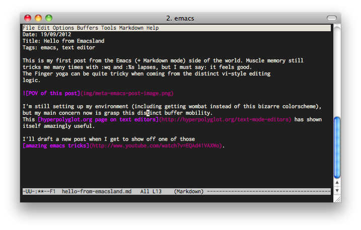

This is my first post from the Emacs (+ Markdown mode) side of the world. Muscle memory still tricks me many times with :wq and :%s lapses, but I must say: it feels good. The Finger yoga can be quite tricky when coming from the distinct vi-style editing logic.

I'm still setting up my environment (including getting wombat instead of this bizarre colorscheme), but my main concern now is grasp this distinct buffer mobility. This hyperpolyglot.org page on text editors has shown itself amazingly useful.
I'll draft a new post when I get to show off one of those amazing emacs tricks.